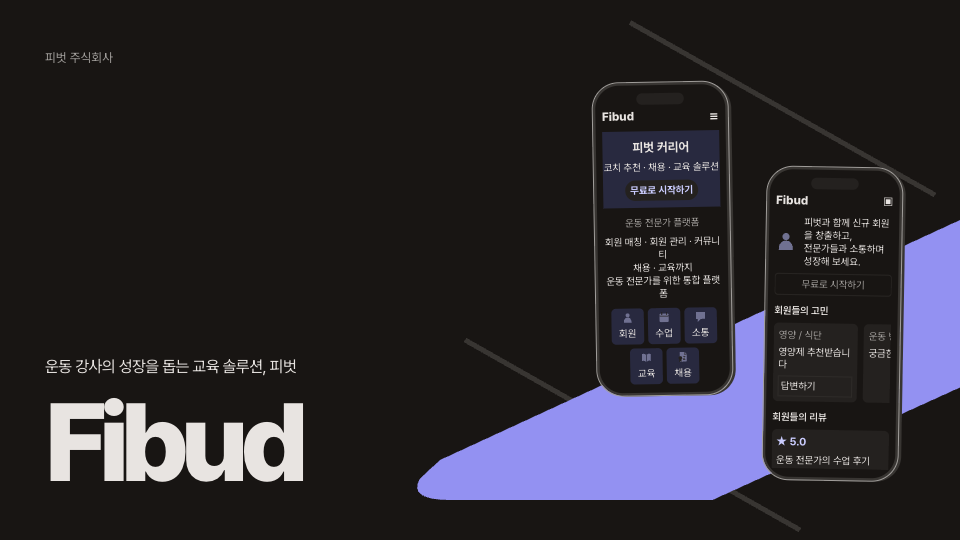
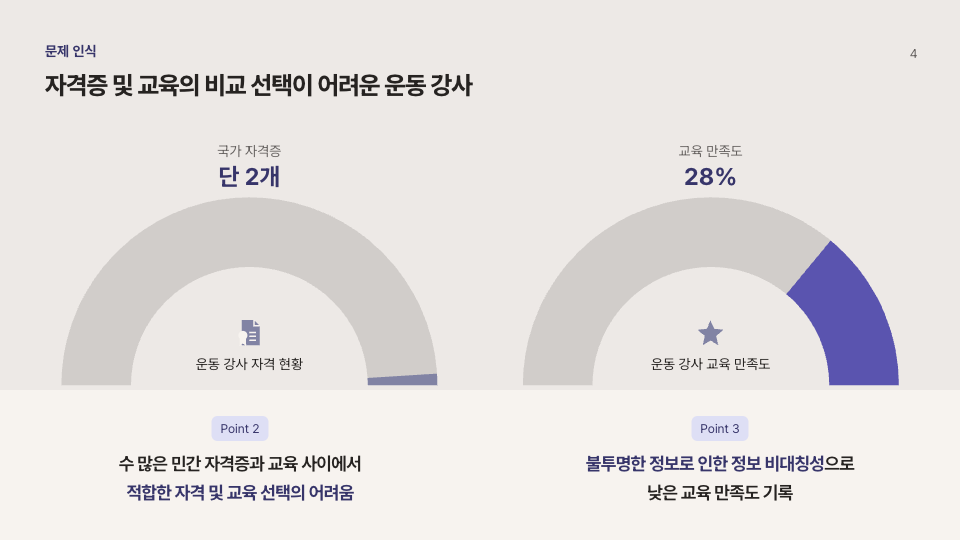
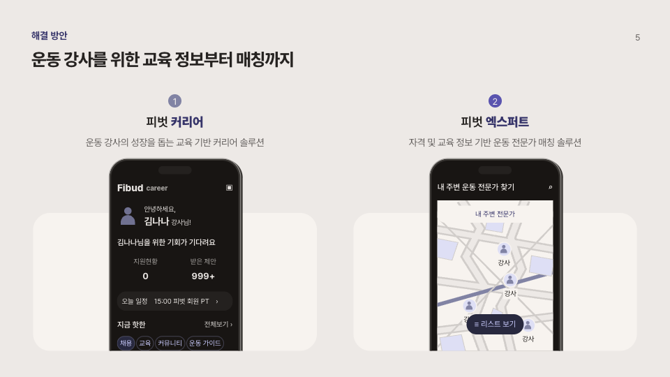
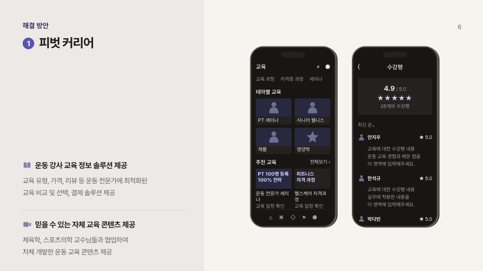
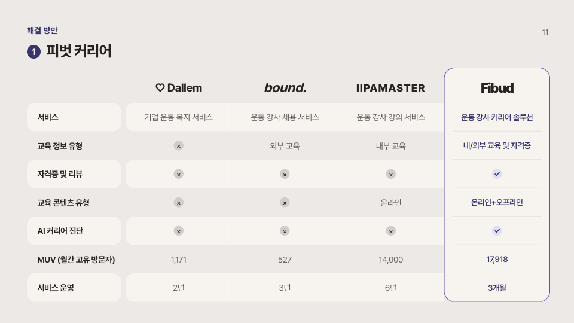
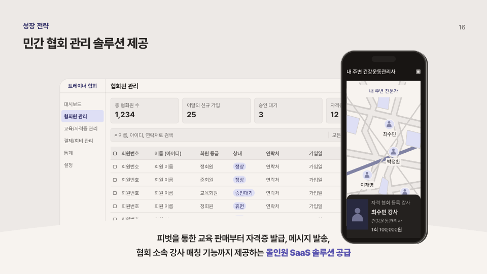

Fibud · 운동 강사의 성장을 돕는 교육 솔루션
좌하단 대형 Fibud 워드마크와 우측 높이가 다른 휴대폰 2대 · 좌하단 대형 Fibud 워드마크와 우측 높이가 다른 휴대폰 2대

자격증 및 교육의 비교 선택이 어려운 운동 강사
상단 제목 아래 동등한 반원형 지표 2개와 하단 2열 핵심 설명 · 상단 제목 아래 동등한 반원형 지표 2개와 하단 2열 핵심 설명

운동 강사를 위한 교육 정보부터 매칭까지
두 솔루션 설명과 하단 라운드 받침 위 앱 화면 2개 · 두 솔루션 설명과 하단 라운드 받침 위 앱 화면 2개

피벗 커리어 · 교육 정보 솔루션
좌측 42% 설명 패널과 우측 교육 목록·수강평 휴대폰 2개 · 좌측 42% 설명 패널과 우측 교육 목록·수강평 휴대폰 2개

피벗 커리어 · 경쟁 서비스 비교
경쟁사 3개와 Fibud의 7개 항목 비교표 및 우측 세로 강조 열 · 경쟁사 3개와 Fibud의 7개 항목 비교표 및 우측 세로 강조 열

민간 협회 관리 솔루션 제공
중앙 웹 관리 대시보드와 우측 겹친 지도 앱, 하단 곡선 띠의 2행 메시지 · 중앙 웹 관리 대시보드와 우측 겹친 지도 앱, 하단 곡선 띠의 2행 메시지